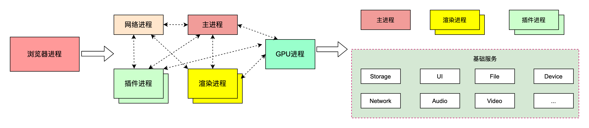

了解客户端容器
浏览器架构
浏览器架构演进
- 单进程架构: 所有模块都跑在一个进程里
- 多进程架构: 分为主进程, 网络进程, 渲染进程, GPU 进程, 插件进程等
- 面向服务的(多进程)架构: 为解决多进程架构中部分进程臃肿的问题, 分为 UI, 数据库, 文件, 设备, 网络等多个独立服务

架构类型 扩展性 安全性 稳定性 流畅度 单进程架构 低, 所有模块运行在同一进程里, 访问同一块内存区域, 数据没有隔离, 新增模块可能会影响原有功能 低, 三方插件可直接访问操作系统里任意资源 低, 三方插件漏洞或者某个 tab 页面 JavaScript 脚本问题可能导致浏览器崩溃 卡顿, 所有页面运行在同一进程中, 开启多个页面时明显卡顿 多进程架构 中, 各进程分配独立的内存区域, 有些进程功能较大, 耦合度高 高, 运行在独立沙箱中, 不能访问系统敏感资源 高, 进程相互隔离, 当一个页面或者插件崩溃时, 不会影响其他进程 流畅, 每个页面运行在独立的渲染进程中,充分利用系统资源 面向服务架构 高,服务模块划分更细, 更内聚, 耦合性低, 易于扩展 高,运行在独立沙箱中, 不能访 问系统敏感资源 高,进程相互隔离, 当一个页面或者插件崩溃时, 不会影响其他进程 流畅, 每个页面运行在独立的渲染进程中, 充分利用系统资源 三种架构的应用
- 单进程架构: 在古早年代有应用, 节约资源
- 多进程架构: 现代浏览器会在机器性能不充足的时候退化到该模式以节约资源
- 面向服务架构: 占用资源多, 现代浏览器会在机器资源充足的时候使用
典型多进程架构
- 浏览器主进程: 逻辑展示, 用户交互, 进程管理
- GPU 进程: 负责整个浏览器的 UI 绘制
- 网络进程
- 渲染进程(标签页): 负责 Tab 页面中的所有内容, 包括 HTML, CSS, JS 的解析与执行
- 插件进程
- 其他实用程序进程: Storage, Network, Audio...
渲染进程
渲染进程中又包含多个线程
- JS 引擎线程: 负责解析, 执行 JS 脚本. 与 GUI 渲染线程互斥, JS 线程执行时间过长会导致页面卡顿
- GUI 渲染线程: 负责渲染浏览器界面, 解析 HTML, CSS, 构建 DOM 树, render 树, 布局, 绘制页面
- 定时器触发线程: 负责当
setTimeout,setInteval计时完毕后将回调放入事件队列 - 网络线程
- 事件触发线程: 宿主环境提供的事件循环处理线程
JS 引擎与 GUI 渲染引擎
JS 引擎的执行流程
graph LR JS源码 --解析器--> AST --翻译--> 字节码 --解析执行--> OS 字节码 --JIT--> 机器码 --直接执行--> OS
- 字节码: 是一种更高效的源码表示形式, 比源码更接近机器码, 但不依赖于平台, 还不是机器码
- JIT (Just-in-Time): 是一种编译策略, 当 JavaScript 引擎在运行时发现代码被反复执行时, 会将反复执行的字节码编译为依赖于平台的机器码以提高执行效率
GUI 渲染引擎
graph LR HTML源码 --XML解析器--> DOM树 --合成--> render树 CSS源码 --CSS解析器--> CSSOM树 --合成--> render树 --渲染--> 显存
- CSSOM 树: 将 CSS 规则解析为规则树用于描述 CSS 样式规则. 这是 CSS 解析的必经之路, 很多 CSS in JS 方案 (例如 StyledComponents) 就采用了这个技术实现空 Style 标签写入 CSS. 但是不建议开发直接撰写 CSSOM, 虽然理论上这可以节约 CSS 解析时间, 但是动态修改 CSSOM 的危害十分巨大, 同时 CSSOM API 并不直观, 即使是 CSS 库也不会直接操作 CSSOM 树
两个引擎通过 JS Bridge 通信并实现互斥
浏览器地址输入 URL 后发生了什么 :(
输入 URL
- UI线程获取输入内容, 判断是否是 URL
- UI 线程统治网络线程发起网络请求, 获取站点内容. 将 Tab 页设置为 Loading
浏览器查找 DNS 记录
解析 DNS
建立 TCP 连接
发起 HTTP 连接
服务端处理请求
客户端接收响应内容
网络线程在收到 HTTP 响应后检查媒体类型 (MIME Type).
如果是 HTML 则通知主进程寻找渲染进程加载页面, 主线程通过 IPC 消息告知渲染进程处理导航
如果是其他文件类型则交给下载管理器处理
渲染页面
- 渲染进程接收数据, 统治主进程开始处理, 导航结束, 进入文档加载阶段
- 渲染进程加载页面所需的子资源(CSS, JS). 执行脚本
- 构建 DOM, CSSOM 树, 构建 render 树
- 计算布局: 计算每个节点的位置与大小, 绘制元素边框, 将元素写入文档流
- 构建与绘制图层: 为特定节点生成专用图层, 对于每个图层生成多个绘制指令, 交给合成线程, 合成线程生成图块交给栅格线程完成光栅化
- 光栅化
执行 JavaScript
断开连接
跨端容器
跨端方案
webview:
网页视图, 可以嵌套在移动端 APP 中加载网页
优点:
- 一次开发, 多次使用, 学习成本低
- 即时更新, 无需下载安装包
- 通过 JSBridge 与系统交互, 可以实现复杂功能
JavaScript 调用 Native
- API 注入: Navive 获取 JavaScript 环境上下文, 对其挂载的对象或方法进行拦截
- 使用 Webview URL Scheme 跳转拦截
- 在 IOS 中使用
window.webkit.messageHandler通信
Native 调用 JavaScript
- 直接通过 webview 暴露 API 执行
- IOS 的
webview.stringByEvaluatingJavaScriptFromString - 安卓的
webview.evaluateJavascript
小程序:
- 双线程方案: 将逻辑与渲染线程分开, 两者通过 Native 完成通信转发.
- 渲染层采用多 webview 方案
React Native / WeeX
- 采用原生 Android / IOS 组件渲染
- 上层采用前端框架生成 Virtual DOM, Virtual DOM 通过 JSBridge 操作 Native API 最后渲染成原生组件
Flutter
- 谷歌的跨端框架
- 新语法, 采用 dart VM
- 采用 skia 完成渲染, 保证跨端一致性
实现原理
- 一套 UI 组件规范
- 一个渲染引擎 (webview, Native, 其他如 skia)
- 逻辑层: JS 引擎
- 通信工具: JSBridge, JSBinding
- 底层 API 抹平: Native API
总结: 推荐 webview, React Native, Flutter
八股:
- 为什么小程序比 webview 流畅:
- 小程序做了很多离线缓存 (比如开屏那个加载很慢的进度条)
- 小程序屏蔽了一部分危险 / 重 API
- 未来的跨端方案: 更可能是 webview. 因为配置简单, 学习成本低
- 为什么小程序比 webview 流畅: